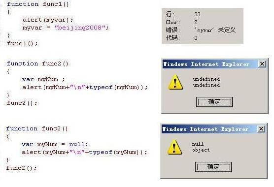
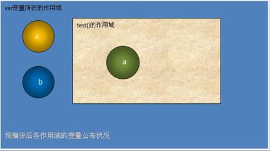
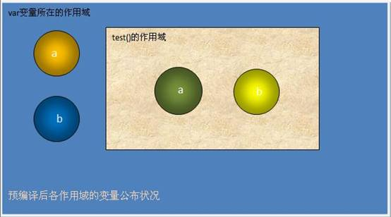

javascript变量的作用域，是一个较简单的问题，但是我们需要对其有较透彻的理解。本文就当全局变量和局部变量命名相同，即产生命名冲突时javascript是如何处理的进行了阐述。
介绍undefined，null，未定义的含义
由上面的测试结果可得：
例1.
<script>
var a = 10;
var b = 100;
function test(){
alert(a);
alert(b);
b = 1000;
alert(b);
var a = 200;
alert(a/2);
alert(++Math.PI);
}
test();
</script> 运行代码结果为：
undefined，100,1000,100,4.141592653589793
我们都明白局部变量的优先级大于全局变量，或者说内围作用域的变量的优先级比外围的高。当JS引擎在当前作用域找不到此变量时，它就往外围的作用域找。不过，在这之前，有一个严肃的问题是，究竟当前作用域存不存在这个变量。像javascript这样的解释型语言，基本分为两个阶段，预编译阶段与运行期。在预编译阶段，它是用函数来划分作用域，然后逐层为其以 var 声明的变量与函数定义开辟内存空间，再然后对var变量进行特殊处理，统统赋初始值为undefined，如下图：
由上图，我们可推知，当前网页拥有两个a,一个b，一个test函数。如果在运行期用到除此以外的变量或函数，就会报未定义错误。 javascript的运行期是在为var变量与函数定义分配空间后立即执行并且是逐行往下执行的。
例2.
<script>
var a = 100;
var b = 1000;
function test(){
alert(a);
alert(b);
var b = 2000;
alert(b);
var a = 200;
alert(a);
}
test();
</script> 此时在test函数的作用域内变量b也被声明了。
所以根据上面的解释得到的结果为：
undefined，undefined，2000,200
预编译时为var变量赋值undefined，以函数定义来分配空间。 掌握这个思想后其余问题都可迎刃而解的。